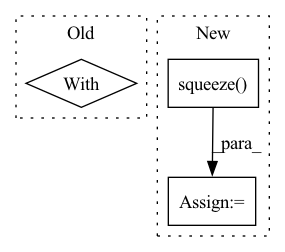

Pattern ID :12665
Before Change
self.G.eval()
self.D.eval()
with torch.no_grad():
z = torch.randn(self.prepare_number, self.G_input_size,1,1).to(self.device)
z = z.to(self.device)
fake_images = self.G(z)
scores = self.D(fake_images).flatten()
After Change
if not os.path.exists(self.image_save_path):
os.makedirs(self.image_save_path)
fake_images = fake_images.mul(0.5).add(0.5).squeeze() .cpu()
image_grid = utils.make_grid(fake_images, nrow=self.save_row_number)
In pattern: SUPERPATTERN
Frequency: 3
Non-data size: 3
Instances Fragment ID: 42943085
Project Name: luzhixing12345/anime-wgan
Commit Name: c309bb95d35f7c02abc2db995b2d8f7cd07c68a9
Time: 2022-05-15
Author: luzhixing12345@163.com
File Name: model/BaseModule.py
M Class Name: BasicGAN
N Class Name: BasicGAN
M Method Name: generate_images(1)
N Method Name: generate_images(1)
M Parent Class: nn.Module
N Parent Class: nn.Module
M File Name: model/BaseModule.py
N File Name: model/BaseModule.py
M Start Line: 90
M End Line: 113
N Start Line: 87
N End Line: 98
Before Change
f, [query_geom_transformed], crop=True, all_touched=True
)
with rasterio.open(os.path.join(self.root, lc_fn)) as f:
lc_data, _ = rasterio.mask.mask(
f, [query_geom_transformed], crop=True, all_touched=True
)
After Change
f, [query_geom_transformed], crop=True, all_touched=True
)
sample[layer] = data.squeeze()
else:
raise IndexError(f"query: {query} spans multiple tiles which is not valid")
Fragment ID: 42943080
Project Name: microsoft/torchgeo
Commit Name: 082dcac8d7c8c5eabfc298bdc9ef96c897271975
Time: 2021-09-03
Author: calebrob6@gmail.com
File Name: torchgeo/datasets/cvpr_chesapeake.py
M Class Name: CVPRChesapeake
N Class Name: CVPRChesapeake
M Method Name: __getitem__(2)
N Method Name: __getitem__(2)
M Parent Class: GeoDataset
N Parent Class: GeoDataset
M File Name: torchgeo/datasets/cvpr_chesapeake.py
N File Name: torchgeo/datasets/cvpr_chesapeake.py
M Start Line: 145
M End Line: 177
N Start Line: 152
N End Line: 189
Before Change
def generate_images(self):
self.G.eval()
with torch.no_grad():
z = torch.randn(self.save_number, self.G_input_size,1,1).to(self.device)
z = z.to(self.device)
fake_images = self.G(z)
if not os.path.exists(self.image_save_path):
After Change
if not os.path.exists(self.image_save_path):
os.makedirs(self.image_save_path)
best_fake_images = best_fake_images.mul(0.5).add(0.5).squeeze() .cpu()
worst_fake_images = worst_fake_images.mul(0.5).add(0.5).squeeze().cpu()
best_image_grid = utils.make_grid(best_fake_images, nrow=self.save_row_number)
Fragment ID: 42943090
Project Name: luzhixing12345/anime-wgan
Commit Name: e567864ac73320dd9322f7f89e7358a9d822750f
Time: 2022-05-12
Author: luzhixing12345@163.com
File Name: model/BaseModule.py
M Class Name: BasicGAN
N Class Name: BasicGAN
M Method Name: generate_images(1)
N Method Name: generate_images(1)
M Parent Class: nn.Module
N Parent Class: nn.Module
M File Name: model/BaseModule.py
N File Name: model/BaseModule.py
M Start Line: 86
M End Line: 94
N Start Line: 90
N End Line: 114